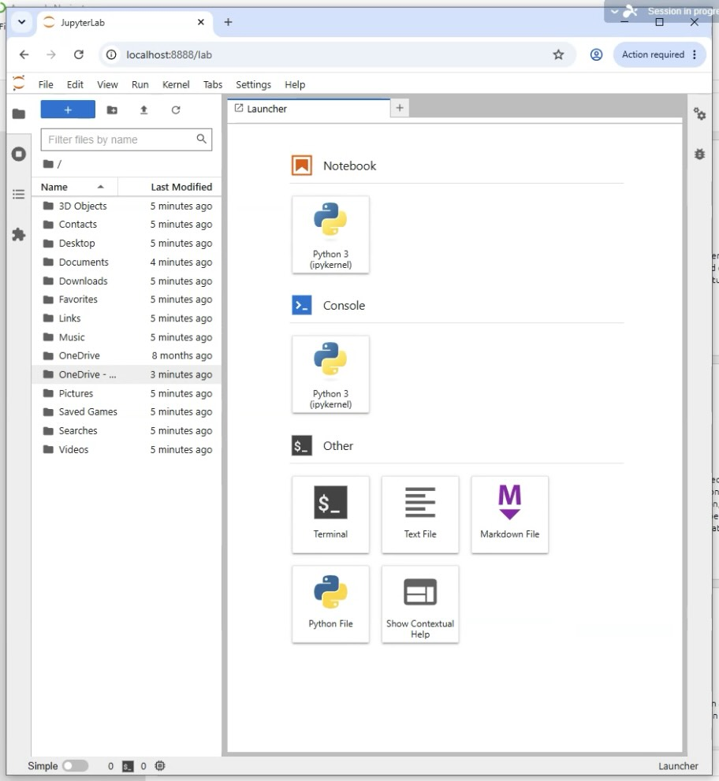
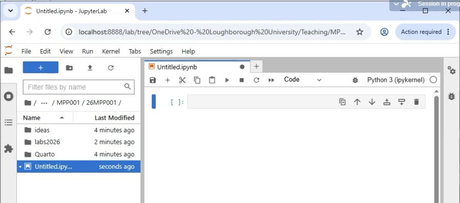
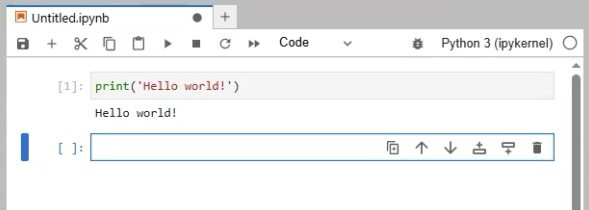
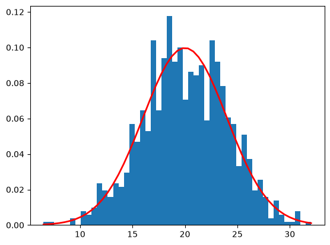

# The code uses the stats library to generate an array of 1000 points belonging to a normal
# distribution with a mean of 20 and a standard deviation of 4
# Import required libraries
from scipy import stats # a suite of statistics related functions
import numpy as np # numpy provides numerical functions and storage similar to that in Matlab
import matplotlib.pyplot as plt # plotting functions inspired by Matlab6 Lab 1: Engineering Calculations with Python
6.1 Learning Objectives
At the end of this exercise set you should be able to:
- Run Python code in notebooks
- Store values in variables
- Use mathematical operators
- Format numerical output
- Understand the relationship between engineering equations and code
6.2 Running python code – notebooks
In this module we will be using Jupyter Notebooks as the environment to run python code. Notebooks are useful ways to develop code alongside embeded notes, equations, images. They are excellent ways to produce reports, presentations, and even entire books.
6.3 Starting Jupyter
On a University PC: In the search box type Anaconda. Amongst the options you should see ‘Anaconda Navigator’ - select this.
Once Anaconda has started: Click on ‘Launch’ in the Jupyter Lab box. This will start a browser window that looks something like this:

The right hand block on this screen allows you to create and start editing files of different types. The left hand block determines where those files will end up.
Important
on startup Jupyter defaults to the main user folder on the PC - you must not save your files here - they are wiped at 6am every day. Instead click on OneDrive-Loughborough University to take you to your OneDrive space. I advise creating a folder there for your MPP001 work.
Once in your MPP001 folder you can click on the ‘Python 3’ square just below Notebook in the righthand block. This will start a new notebook:

Click in the light-grey box to begin to write code. An easy starter is:print('Hello world!')`Press Shift and Return at the same time to execute the code in the block. You should get something like this:

Notice that the box you typed in now has a number - this tells you that the code in it has been executed and when there is more than one code block it lets you work out the order of running the blocks. Second the text ‘Hello world!’ has appeared below the block – this is the output of the python code. Finally, a new empty block awaits your input.
If you had just pressed return then you would have gone to a new line in the block and you could have added more code.
You can go back to a cell to modify it and/or re-run it. To do this, just click in the cell.
Blocks in notebooks can be one of 3 kinds: Code - the default, Markdown – useful for text, images, etc., and Raw - we are unlikely to use this. You can change a block type by clicking on the word Code in the top-bar of the window.
You can find out more about notebooks at this link
The code below is an example of a small Jupyter notebook. The code has been split into three cells. It could have been put in a single cell, but dividing code up like this makes it easier to follow and much easier to maintain or adapt.
- The first cell imports (brings in) external code libraries to extend what python itself can do.
- The second cell sets up some parameters
- The third cell does some working out and displays the results
This general format is quite common for a notebook. There are often more cells, but the general layout remains the same.
Note: in python the # symbol is used to mark what follows on the line as being a comment. This means that anything to the right of the symbol is ignored by python. This allows you to put explanatory notes in your code. It is also a quick way to turn off one or more lines of code when you are testing/debugging it.
# Specify the properties of the normal distribution
n_sample = 1000
mean = 20
sigma = 4# Generate an array of data belonging to the normal distribution
rand_dist1 = stats.norm.rvs(loc = mean, scale = sigma, size = n_sample)
# Check that the data meets expectations
print(f"Mean = {np.mean(rand_dist1):.4f} and stddev = {np.std(rand_dist1):.4f}")
print(stats.normaltest(rand_dist1))
# Plot the histogram of the data and the distribution function
count, bins, ignored = plt.hist(rand_dist1, 50, density=True)
plt.plot(bins, 1/(sigma * np.sqrt(2 * np.pi)) * np.exp( - (bins - mean)**2 / (2 * sigma**2)), linewidth=2, color='r')
plt.show()Mean = 20.05 and stddev = 3.9996
NormaltestResult(statistic=np.float64(1.6929087397738105), pvalue=np.float64(0.42893307700219363))
6.4 Storing values in variables
In programming we almost always need to store values e.g. in the above code the properties of the normal distribution were specified in the second block. These values are then used in the third block by referring to the variable names. The general format for assigning variables is
variable_name = value
Very often the value will be a number (e.g. lab_length = 2) however other types of information can be stored e.g.
name = 'Simon'
print(f'My name is {name}')
Note
the pair of ‘…’ around the value tell python that the value is a string (text) rather than the name of another variable. Python has a range of different variable types - you should be able to spot them as you go along. Python can usually work out the type from the context of the code.
Note
The f at the beginning of the string is important – there is more about later in this chapter.
6.5 Functions
Very often in programming we need to do use the same block of code multiple times, perhaps with different start values. One of the ways of achieving this is a function. Python has a lot of built in functions e.g. print() in the code above we’ll meet many more as the learning progresses. Most programming languages have a way of defining functions (blocks of code) for re-use so that what can be done can be extended.
In python we define a function as follows:
def function_name(parameters):
# code block (the indenting of the code is important)
#
return value_returned # if anyfunction_name is the identifier used to reference, or ‘call’, the function. parameters is a comma separated list of one or more values that are used by the function’s code block. The code block can produce output as it runs or return a value to the point in the code that it was called.
6.6 Formatting results
In the third cell above the line
# Check that the data meets expectations
print(f"Mean = {np.mean(rand_dist1):,.4f} and stddev = {np.std(rand_dist1):,.4f}")results in this output: Mean = 19.8415 and stddev = 3.9406
Notice that the numerical results are both given to 4 decimal places. This is no accident, the code in that print() statement is set up to control the format of the output. This process starts with the f just to the right of the first bracket. This tells Python that the string (text) that follows is likely to contain placeholders {} which can contain variables, code, and formatting information.
The first placeholder above has two parts: np.mean(rand_dist1) this calls the numpy library function mean() with rand_dist1 as its parameter value. It will return a number with a lot of decimal places. The part of the placeholder after the colon is a formatter .4f this tells Python to give the result to 4 decimal places. If you (quite sensibly) prefer to limit the number of significant figures then use g in place of the f. Try changing the formatters in the code above. You can find out more about formatters at this page. They can do more than control number precision.
The second placehold has a very similar structure. You can modify one and compare its new output to the other one to help get a feel for what the various formatters do.
6.7 Assessment
The work for the first week is designed to help you get used to: Assigning values, maths functions, creating your own functions.
Download the Week 1 notebook from the Learn page and attempt the programming problems given.